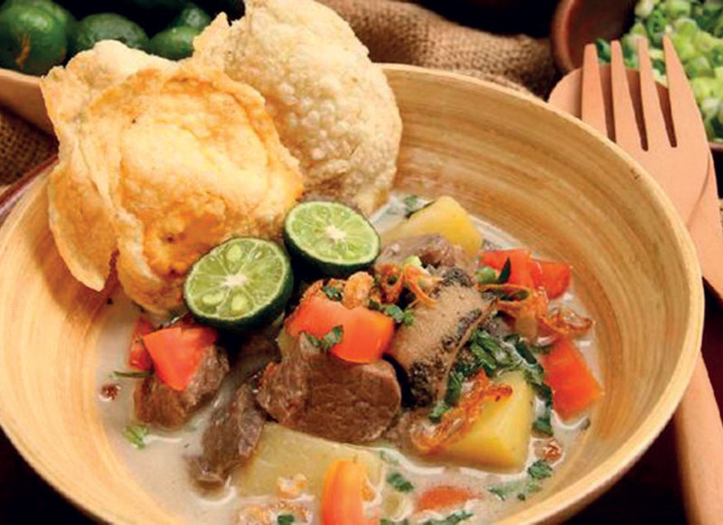

Soto Betawi

This is a recipe of Soto Betawi, Soto betawi is one of Indonesia's traditional dishes,
it is made up from cut vegetables, beef and coconut milk based soup
Ingredients
- 500g brisket beef
- 300ml instant coconut milk
- 200ml fresh milk
- 1L water
- fried shallots
- Green Kumquat
- spring onions
Steps
-
Presto the Meat
- Fill water in (presto) or normal pot, place on the stove and turn on the heat. Place the meat into a pot and let it boil.
- Once the color of meat has turned, throw in the herbs and spices.
- Take off heat and set aside. Pour out the boiled water onto another pan and heat.
- Cut the meat in cubed size
-
Saute spices
- In a clean pan, pour oil, and add in all the fine spices, saute and mix until it gives out a strong fragrant aroma and cook.
- Add the mixture into the boiling pot of the residue from the boiled meat. Continue to boil at low heat.
-
Boil Broth with spices
- In the boiled pot broth with the added mixture of spice, reduce heat, and begin to pour in coconut milk, milk.
- Add in salt and pepper seasoning to taste.
- Add in the cube sized meats, along with potato and tomato cuts (cubed or wedges) into the pot mixture, and stir occasionally.
-
Plate and Serve!
- Scoop a mixture of meats, tomato and potatoes and place into a bowl.
Sprinkle fried shallots and spring onion. And sweet soya to taste.
Serve with Emping (type of Indonesian chips, a bite-size snack made from
of melinjo or belinjo (Gnetum gnemon) nuts (which are seeds).
Emping crackers have a slightly bitter taste.